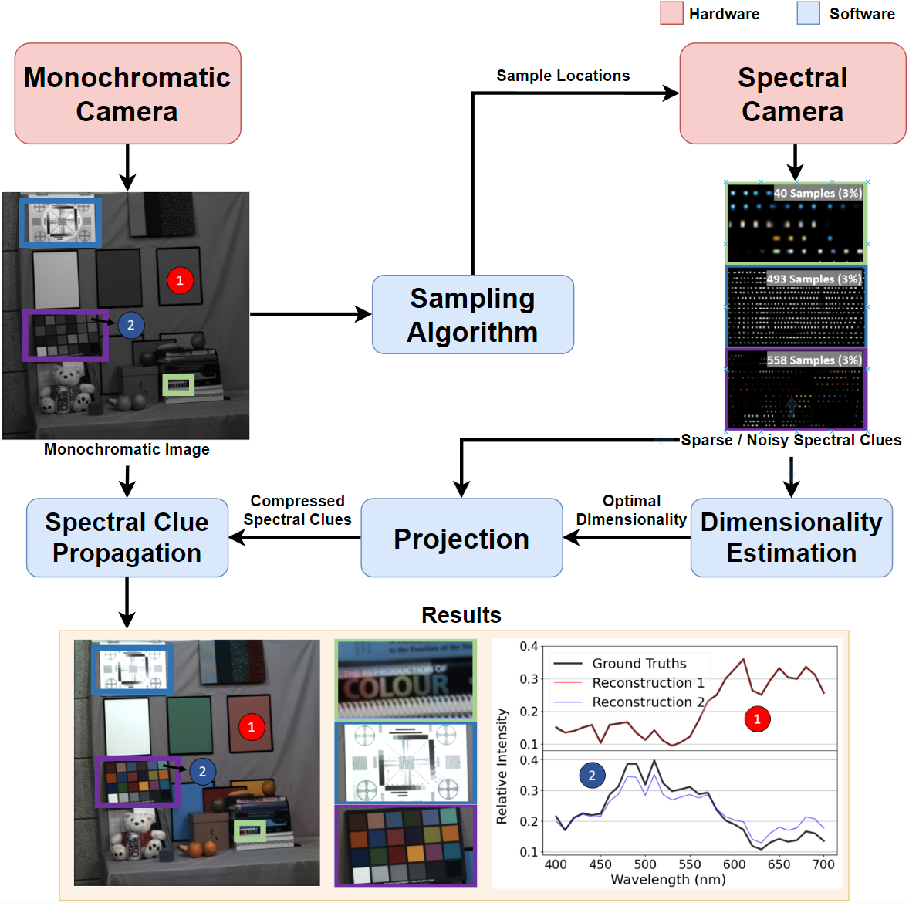

Hyperspectral cameras face challenging spatial-spectral resolution trade-offs and are more affected by shot noise than RGB photos taken over the same total exposure time. Here, we present a colorization algorithm to reconstruct hyperspectral images from a grayscale guide image and spatially sparse spectral clues. We demonstrate that our algorithm generalizes to lower dimensional models for hyperspectral images, and show that colorizing in a low-rank space reduces compute time and the impact of shot noise. To enhance robustness, we incorporate guided sampling, edge-aware filtering, and dimensionality estimation techniques. Our method surpasses previous algorithms in various performance metrics, including SSIM, PSNR, GFC, and EMD, which we propose as valuable metrics for characterizing hyperspectral image quality. Collectively, these findings provide a promising avenue for overcoming the time-space-wavelength resolution trade-off by reconstructing a dense hyperspectral image from samples obtained by whisk or push broom scanners, as well as computational imaging systems.
We will share BibTex code here, once the paper is published.